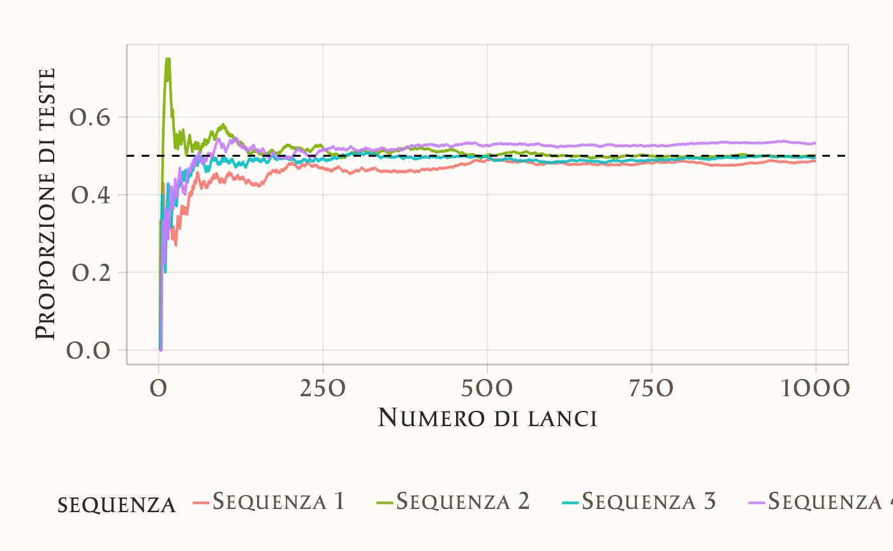

5 Interpretazione della probabilità
- a comprendere le diverse interpretazioni della probabilità.
- Leggere Why probability probably doesn’t exist (but it is useful to act like it does (Spiegelhalter, 2024).
- Leggere ?sec-apx-sets.
5.1 Introduzione
Nel corso di questo capitolo, esploreremo varie concezioni della probabilità, tra cui la visione classica, frequentista e bayesiana. Inoltre, introdurremo la simulazione con R per una migliore comprensione della legge dei grandi numeri, un concetto fondamentale nell’ambito della probabilità. Iniziamo introducendo il concetto di causalità.
5.2 Il Concetto di Casualità e la Teoria della Probabilità
David Spiegelhalter, in un recente articolo pubblicato su Nature, introduce il concetto di probabilità partendo dall’idea di incertezza:
Life is uncertain. None of us know what is going to happen. We know little of what has happened in the past, or is happening now outside our immediate experience. Uncertainty has been called the ‘conscious awareness of ignorance’ — be it of the weather tomorrow, the next Premier League champions, the climate in 2100 or the identity of our ancient ancestors (Spiegelhalter, 2024).
L’incertezza può essere interpretata come una manifestazione della casualità, che non rappresenta solo un fenomeno, ma anche un modello concettuale utile per affrontare l’imprevedibilità della realtà. Attraverso il concetto di casualità, è possibile gestire e quantificare eventi che, pur essendo imprevedibili singolarmente, seguono schemi regolari e riconoscibili. Questo rende la casualità uno strumento cruciale per comprendere il mondo e prendere decisioni.
Attempts to put numbers on chance and uncertainty take us into the mathematical realm of probability, which today is used confidently in any number of fields (Spiegelhalter, 2024).
La teoria della probabilità offre una risposta matematica all’incertezza, permettendo di esprimere in termini numerici il grado di possibilità associato a un evento. Grazie a questa formalizzazione, possiamo modellare fenomeni complessi e applicare il concetto di probabilità in ambiti che spaziano dalla ricerca scientifica alla vita quotidiana.
5.2.1 L’Urna come Modello della Casualità
Uno degli esempi più classici per rappresentare la casualità è il modello dell’urna. Immaginiamo un’urna contenente palline identiche, ciascuna numerata in modo univoco. Se ogni pallina ha la stessa probabilità di essere estratta, l’estrazione è considerata casuale. Sebbene non possiamo prevedere quale pallina verrà estratta, sappiamo che tutte hanno uguali possibilità di essere selezionate.
Questo modello, nella sua semplicità, incarna l’essenza della casualità. La sua applicazione non si limita all’estrazione di palline, ma si estende a scenari più complessi. Ad esempio, il modello dell’urna rappresenta un concetto di base utilizzato per comprendere processi che si ritrovano in statistica, scienze naturali e psicologia.
5.2.1.1 Applicazioni del Modello della Casualità
Indagini statistiche: Il campionamento casuale è essenziale per ottenere campioni rappresentativi di una popolazione più ampia, riducendo il rischio di bias di selezione e aumentando la generalizzabilità delle conclusioni.
Sperimentazione scientifica: La randomizzazione è uno strumento fondamentale per controllare le variabili confondenti, consentendo di attribuire le differenze osservate tra gruppi al trattamento, minimizzando l’influenza di fattori esterni.
Open any science journal, for example, and you’ll find papers liberally sprinkled with P values, confidence intervals and possibly Bayesian posterior distributions, all of which are dependent on probability (Spiegelhalter, 2024).
- Simulazioni: In fisica, psicologia e altre discipline, le simulazioni basate sulla casualità permettono di analizzare sistemi complessi e formulare previsioni, offrendo strumenti indispensabili per la ricerca scientifica.
Il modello dell’urna, sebbene semplice, costituisce un pilastro per comprendere e applicare il concetto di casualità in una vasta gamma di contesti.
5.2.2 Dalla Casualità alla Teoria della Probabilità
La teoria della probabilità si sviluppa a partire dal concetto di casualità, fornendo strumenti matematici per analizzare e quantificare rigorosamente l’incertezza. Questo approccio consente di tradurre intuizioni intuitive in un linguaggio formale e preciso, attraverso cui è possibile:
Quantificare l’incertezza: Assegnare valori numerici agli esiti possibili permette di esprimere in modo preciso la probabilità di ciascun evento.
Combinare informazioni: Utilizzando regole come la somma e il prodotto delle probabilità, possiamo calcolare la probabilità di eventi complessi partendo da eventi più semplici.
Aggiornare le credenze: La teoria della probabilità, in particolare nella sua formulazione bayesiana, offre metodi per aggiornare le stime di probabilità alla luce di nuove informazioni.
Prendere decisioni informate: Valutando rischi e benefici attesi, la probabilità guida scelte razionali in condizioni di incertezza.
In sintesi, casualità e probabilità rappresentano strumenti essenziali per affrontare fenomeni non deterministici caratterizzati dall’imprevedibilità.
5.2.3 L’Incertezza nei Fenomeni Non Deterministici
L’incertezza, caratteristica fondamentale dei fenomeni non deterministici, può essere ricondotta a due principali fonti:
Incertezza epistemica
Questa forma di incertezza deriva dalla nostra conoscenza limitata o incompleta. Ad esempio, in un esperimento scientifico complesso, l’impossibilità di controllare o osservare tutte le variabili coinvolte può introdurre incertezza nei risultati. In questi casi, l’incertezza non è una proprietà intrinseca del fenomeno studiato, ma riflette i limiti della nostra capacità di misurare, modellare o comprendere pienamente la realtà.Incertezza ontologica
Questa forma di incertezza è intrinseca al fenomeno stesso, indipendentemente dal livello di conoscenza o controllo che possiamo esercitare. Ad esempio, in fisica quantistica, il principio di indeterminazione di Heisenberg ci ricorda che l’indeterminazione è una caratteristica fondamentale della realtà fisica. Un esempio intuitivo è il lancio di un dado: anche se conoscessimo tutte le condizioni iniziali (forza applicata, angolo di lancio, ecc.), non potremmo mai prevedere con assoluta certezza il risultato finale, poiché il sistema stesso è intrinsecamente casuale.
Il fisico danese Niels Bohr ha espresso una visione illuminante su questo tema: secondo Bohr, l’obiettivo della fisica non è tanto quello di rivelare una verità assoluta sulla natura, quanto piuttosto di comprendere ciò che possiamo dire su di essa. Questa prospettiva mette in luce il fatto che l’incertezza, sia epistemica che ontologica, rappresenta i limiti del nostro linguaggio, dei nostri strumenti di misura e delle nostre conoscenze.
5.2.4 Probabilità e Interpretazione Soggettiva
Questo approccio si allinea bene con l’interpretazione soggettiva della probabilità. Secondo questa visione, la probabilità non è una proprietà oggettiva degli eventi, ma rappresenta il grado di fiducia o convinzione di un individuo riguardo al verificarsi di un evento, sulla base delle informazioni di cui dispone. Ad esempio, stimare che ci sia il 70% di probabilità che piova domani riflette non una certezza oggettiva, ma il livello di confidenza che attribuiamo a tale previsione, considerati i dati disponibili.
5.3 La Storia della Probabilità
5.3.1 La Dualità della Probabilità
Come sottolinea Hacking (2006), il concetto di probabilità si sviluppa attorno a due principali dimensioni:
Epistemologico: La probabilità come misura della credibilità o plausibilità di una proposizione, basata sulle evidenze disponibili. In questa accezione, la probabilità è uno strumento per quantificare la nostra conoscenza e per ragionare in condizioni di incertezza.
Frequenziale: La probabilità come tendenza osservabile nei fenomeni aleatori, in cui frequenze relative stabili emergono nel lungo termine. Questo approccio descrive la probabilità come un fenomeno naturale oggettivo, osservabile attraverso esperimenti ripetuti.
Questa dualità — probabilità come misura della conoscenza e probabilità come proprietà del mondo naturale — è stata formalizzata solo a partire dal XVII secolo, grazie al lavoro pionieristico di Blaise Pascal e Pierre de Fermat.
5.3.2 Le Origini della Probabilità Moderna
Il gioco d’azzardo, una pratica antica e universale, ha rappresentato per secoli uno dei pochi ambiti in cui venivano esplorati concetti rudimentali di probabilità. Resti di dadi e altri strumenti di gioco sono stati rinvenuti in siti sumeri, assiri ed egizi, a testimonianza di una lunga tradizione di interazione con l’alea. Tuttavia, fu solo nel 1654 che il matematico Antoine Gombaud, conosciuto come Chevalier de Méré, sollevò una questione che portò allo sviluppo della probabilità moderna.
L’aneddoto più celebre riguarda la sua domanda a Blaise Pascal:
Due giocatori, A e B, stanno partecipando a un gioco in cui il primo a vincere sei round consecutivi ottiene il premio. Dopo sei round, A ha vinto cinque round e B uno. Poiché il gioco viene interrotto, come si dovrebbe dividere il premio in modo equo?
Questo problema spinse Pascal e Fermat a sviluppare i primi strumenti matematici per calcolare la probabilità degli eventi futuri, dando vita a un metodo rigoroso per affrontare l’incertezza. Stimando, ad esempio, che A avesse il 97% di probabilità di vincere e B il 3%, sembrava equo dividere il premio nella stessa proporzione.
La soluzione di questo problema ispirò Christian Huygens, che nel 1657 pubblicò il trattato De Ratiociniis in Ludo Aleae. Quest’opera, fondamentale per lo studio della probabilità, rimase il riferimento principale per almeno cinquant’anni.
5.3.3 Contributi Successivi
Parallelamente, altri studiosi iniziarono a sviluppare idee legate ai due aspetti della probabilità:
-
Christian Huygens: concentrò il suo lavoro su problemi legati al gioco d’azzardo e alla casualità.
-
Leibniz: esplorò la probabilità come misura epistemologica, applicandola alla logica e al diritto.
-
John Graunt (1662): studiò le frequenze stabili nella demografia, introducendo concetti proto-statistici legati alla probabilità frequenziale.
- Antoine Arnauld e il gruppo di Port-Royal: approfondirono la probabilità come strumento per valutare la credibilità e il ragionamento.
Nel 1713, Jacob Bernoulli pubblicò postumo L’Arte della Congettura, introducendo la legge dei grandi numeri. Quest’opera formalizzò il legame tra la probabilità epistemologica e quella frequenziale, ampliandone le applicazioni a contesti quali la mortalità, la giustizia penale e le decisioni economiche.
5.3.4 La Dualità nella Filosofia della Probabilità
La dualità intrinseca del concetto di probabilità non è solo una questione terminologica o tecnica, ma riflette due prospettive fondamentali sul modo in cui interpretiamo e modelliamo l’incertezza.
Da un lato, la probabilità epistemologica si focalizza su ciò che sappiamo o possiamo sapere, descrivendo il grado di fiducia o credibilità di una proposizione data l’evidenza disponibile. Dall’altro, la probabilità frequenziale cerca di catturare l’aleatorietà intrinseca del mondo naturale, identificando schemi ricorrenti e frequenze stabili nei fenomeni osservati.
Questa dualità emerge chiaramente anche nel dibattito filosofico che ha coinvolto figure come Poisson, Cournot, Carnap e altri. Ad esempio, distinguendo tra “chance” e “probabilità”, Poisson e Cournot hanno sottolineato come la probabilità possa essere usata sia per descrivere eventi aleatori oggettivi sia per quantificare il grado di conoscenza soggettiva su tali eventi.
Nella seconda metà del XX secolo, i filosofi della scienza come Carnap hanno approfondito ulteriormente questa distinzione, proponendo un modello duale di probabilità:
-
Probabilità induttiva: un modo per ragionare su ipotesi ed evidenze, essenzialmente epistemologico.
- Probabilità statistica: uno strumento per descrivere i fenomeni aleatori, principalmente frequenziale.
La tensione tra questi due approcci ha portato allo sviluppo di teorie e metodi distinti, spesso con implicazioni pratiche e metodologiche profondamente diverse.
5.3.5 La Dualità Riflessa nei Metodi Bayesiani e Frequentisti
La distinzione tra probabilità epistemologica e frequenziale si riflette chiaramente nei due principali paradigmi della statistica moderna: l’approccio bayesiano e quello frequentista.
5.3.5.1 Approccio Bayesiano
L’approccio bayesiano, basato su principi epistemologici, considera la probabilità come una misura soggettiva del grado di fiducia o convinzione. Attraverso il teorema di Bayes, le stime di probabilità vengono aggiornate in modo iterativo, integrando nuove informazioni con le conoscenze preesistenti (probabilità a priori). Questo approccio permette di modellare l’incertezza in modo dinamico e flessibile, rendendolo particolarmente utile in contesti in cui i dati sono limitati o l’incertezza è complessa.
Ad esempio, in psicologia, un terapeuta potrebbe iniziare con una probabilità a priori basata sulla propria esperienza clinica riguardo alla probabilità che un paziente soffra di un determinato disturbo (ad esempio, disturbo d’ansia). Man mano che il terapeuta raccoglie nuove informazioni durante le sessioni (ad esempio, osservazioni comportamentali o risposte a questionari), aggiorna la sua valutazione iniziale, calcolando una probabilità a posteriori più accurata. Questo processo riflette l’idea che la conoscenza si evolve con l’accumularsi di nuove evidenze.
5.3.5.2 Approccio Frequentista
L’approccio frequentista, invece, si concentra sull’aspetto oggettivo della probabilità, definendola come la frequenza relativa di un evento in una serie molto ampia (idealmente infinita) di prove ripetute. In questo contesto, la probabilità non è influenzata da credenze soggettive, ma è vista come una proprietà intrinseca del fenomeno studiato.
Un esempio psicologico potrebbe essere la valutazione dell’efficacia di una terapia comportamentale per ridurre i sintomi di ansia. Un ricercatore frequentista potrebbe condurre uno studio sperimentale con un gran numero di partecipanti, misurando la frequenza con cui i sintomi migliorano nel gruppo che riceve la terapia rispetto a un gruppo di controllo. La probabilità di successo della terapia sarebbe quindi stimata esclusivamente in base ai risultati osservati, senza considerare ipotesi o convinzioni preliminari. Questo approccio è particolarmente utile in contesti sperimentali in cui è possibile ripetere le osservazioni sotto condizioni controllate.
5.3.6 Differenze, Complementarità e Critiche
Gli approcci bayesiano e frequentista presentano differenze fondamentali, ma non devono essere necessariamente considerati in conflitto. In determinati contesti applicativi, possono persino essere visti come complementari:
-
Approccio bayesiano: si distingue per la sua capacità di affrontare situazioni caratterizzate da elevata incertezza o dati limitati. Grazie all’integrazione esplicita di conoscenze pregresse mediante distribuzioni a priori, il paradigma bayesiano è particolarmente efficace nell’analisi di problemi complessi che richiedono un continuo aggiornamento delle stime alla luce di nuove evidenze.
- Approccio frequentista: offre strumenti consolidati e più semplici da applicare, risultando particolarmente adatto in situazioni in cui sono disponibili grandi quantità di dati indipendenti e si richiedono procedure standardizzate per l’inferenza statistica.
Tuttavia, entrambi gli approcci sono stati oggetto di critiche:
Critiche all’approccio bayesiano:
La scelta delle distribuzioni a priori è stata spesso considerata un elemento soggettivo, che potrebbe influenzare i risultati dell’analisi. Tuttavia, questa critica ha perso parte della sua rilevanza con l’evoluzione dell’approccio bayesiano moderno, che fa ampio uso di prior debolmente informativi per ridurre l’impatto delle scelte iniziali e garantire inferenze più robuste. Un’altra critica riguarda la complessità computazionale. Nonostante i progressi tecnologici abbiano notevolmente ridotto i costi computazionali, l’approccio bayesiano può ancora rappresentare una sfida in contesti applicativi, specialmente quando si utilizzano modelli particolarmente sofisticati o grandi volumi di dati.Critiche all’approccio frequentista:
L’inferenza frequentista è stata criticata per la sua forte dipendenza dal test dell’ipotesi nulla (NHST), un metodo spesso applicato in modo meccanico e senza un’adeguata contestualizzazione. Il NHST è stato identificato come uno dei fattori chiave alla base della crisi di replicabilità che ha interessato diverse discipline scientifiche, tra cui la psicologia. Inoltre, l’approccio frequentista mostra limiti nella gestione di modelli complessi o situazioni in cui le ipotesi fondamentali (ad esempio, l’indipendenza delle osservazioni o la normalità delle distribuzioni) non sono realistiche. Questa rigidità può rendere difficile l’applicazione in contesti reali, dove i dati spesso presentano strutture più articolate o violano le assunzioni di base.
In sintesi, mentre l’approccio bayesiano affronta sfide legate alla soggettività iniziale e alla complessità computazionale, l’approccio frequentista è criticato per la sua dipendenza da metodologie rigide e per la difficoltà di adattarsi a scenari complessi o non ideali.
Negli ultimi anni, l’approccio bayesiano ha guadagnato una crescente popolarità, soprattutto per la sua capacità di affrontare modelli complessi e di fornire inferenze più flessibili rispetto alle procedure frequentiste. La forza del paradigma bayesiano risiede nella sua natura adattabile, che consente di incorporare conoscenze pregresse e di aggiornare continuamente le stime in base a nuove informazioni. Questo lo rende particolarmente utile in ambiti come l’intelligenza artificiale, la data science e la psicologia, dove l’analisi richiede spesso un’interpretazione dinamica e multidimensionale dell’incertezza.
In conclusione, sebbene l’approccio frequentista abbia costituito per decenni il pilastro dell’analisi statistica tradizionale, il paradigma bayesiano si è affermato come una soluzione più avanzata e flessibile, capace di rispondere alle esigenze della ricerca contemporanea. Questa evoluzione rappresenta non solo un progresso metodologico, ma anche un cambiamento culturale e scientifico, che richiede strumenti più solidi e versatili per affrontare la complessità intrinseca dei fenomeni oggetto di studio.
5.3.7 Implicazioni Filosofiche e Pratiche
La dualità della probabilità, tra epistemologia e frequenza, riflette una tensione fondamentale nel pensiero scientifico e filosofico: il tentativo di bilanciare una descrizione oggettiva della realtà con la soggettività inevitabile del processo interpretativo. Questa tensione non è solo teorica, ma influenza profondamente il modo in cui i metodi statistici vengono applicati nei diversi ambiti del sapere.
Con questo in mente, esploriamo ora come il concetto di probabilità si sia evoluto storicamente e come continui a influenzare il progresso scientifico.
5.4 L’Evoluzione del Concetto di Probabilità
La storia della probabilità offre un contesto ricco per comprendere le diverse interpretazioni e applicazioni del concetto di probabilità. Le definizioni classiche e frequentiste, sebbene centrali nello sviluppo iniziale della statistica, hanno rivelato limiti concettuali e pratici che hanno spinto verso approcci più generali e flessibili.
5.4.1 Interpretazione Classica
La definizione classica di probabilità fu proposta da Pierre-Simon Laplace (1749-1827), che basò il concetto sul calcolo combinatorio. Secondo Laplace, la probabilità di un evento è data dal rapporto tra i casi favorevoli e il numero totale di casi possibili, assumendo che tutti siano equiprobabili. Ad esempio, la probabilità di ottenere un “3” lanciando un dado è \(\frac{1}{6}\), poiché solo uno dei sei risultati è favorevole.
Questo approccio, pur utile per scenari semplici, è limitato dalla sua dipendenza da ipotesi spesso irrealistiche (es., l’assunzione che ogni evento sia equiprobabile) e da una formulazione implicitamente circolare (poiché presuppone una conoscenza implicita del concetto di probabilità).
5.4.2 Interpretazione Frequentista
Per superare tali limiti, il frequentismo definisce la probabilità come il limite della frequenza relativa con cui un evento si verifica in una serie infinita di prove. Per esempio, la probabilità di ottenere “testa” in un lancio di moneta può essere stimata come la frequenza relativa di “testa” sul totale dei lanci, quando il numero di lanci tende all’infinito. Questa definizione è utile, ma impraticabile in molte situazioni, poiché richiede un numero infinito di ripetizioni e assume che gli eventi futuri siano identici a quelli passati.
La figura seguente illustra la proporzione di risultati “testa” in una sequenza di lanci di una moneta equa. Si può osservare come la frequenza relativa dei risultati “testa” converga progressivamente verso il valore della probabilità teorica.

5.4.2.1 La Legge dei Grandi Numeri
Un pilastro fondamentale dell’approccio frequentista è la Legge dei Grandi Numeri (LLN, dall’inglese Law of Large Numbers), che garantisce la convergenza delle frequenze empiriche ai valori teorici al crescere del numero di osservazioni (per un approfondimento, si veda la Sezione 14.6). Questo principio è essenziale per comprendere come la variabilità casuale si riduca e come le stime empiriche diventino sempre più affidabili con l’aumentare della dimensione del campione. La LLN fornisce un ponte tra la teoria della probabilità e le applicazioni pratiche, dimostrando che, sotto condizioni appropriate, i dati osservati riflettono con precisione crescente le proprietà teoriche della popolazione.
In termini semplici, la Legge dei Grandi Numeri afferma che, all’aumentare del numero di prove, la media dei risultati osservati si avvicina progressivamente al valore atteso della variabile casuale. Anche se i risultati individuali possono variare in modo casuale, la media di un gran numero di osservazioni riflette con sempre maggiore precisione la probabilità teorica. Questo principio è alla base della validità delle stime empiriche e della loro affidabilità nel lungo periodo.
5.4.2.2 Implicazioni della Legge dei Grandi Numeri
Affidabilità delle stime empiriche:
Con un numero sufficiente di osservazioni, le stime empiriche delle probabilità diventano sempre più precise e affidabili. Questo è particolarmente importante in contesti applicativi, dove la precisione delle stime è cruciale per prendere decisioni informate.Validità dei modelli probabilistici:
La LLN fornisce un fondamento teorico per l’uso di modelli probabilistici nella descrizione e previsione di fenomeni reali. Anche se le osservazioni singole possono essere imprevedibili, la media di un gran numero di osservazioni tende a stabilizzarsi attorno al valore teorico, rendendo possibile l’uso di modelli probabilistici per rappresentare la realtà.Convergenza delle medie campionarie:
La media di un gran numero di osservazioni converge al valore teorico della popolazione. Questo rende le medie campionarie strumenti affidabili per stimare la media della popolazione, purché il campione sia sufficientemente ampio.
Esempio 5.1 Consideriamo il classico esempio del lancio di una moneta. Supponiamo che la probabilità teorica di ottenere testa sia \(p\) = 0.5. Quando effettuiamo un numero limitato di lanci, è possibile osservare una proporzione di teste che si discosta significativamente dal valore teorico di 0.5, a causa della variabilità intrinseca del fenomeno casuale. Tuttavia, aumentando progressivamente il numero di lanci, la Legge dei Grandi Numeri entra in gioco: la proporzione di teste osservate tenderà gradualmente a convergere verso il valore teorico di 0.5. Questo esempio illustra intuitivamente come le frequenze relative delle osservazioni si avvicinino alle probabilità teoriche al crescere del numero di prove, fornendo un fondamento empirico alla stessa legge.
5.4.2.3 Limiti e Considerazioni
Sebbene la Legge dei Grandi Numeri sia un principio potente, è importante tenere presente alcune limitazioni:
Campioni piccoli:
In presenza di un numero limitato di osservazioni, la variabilità casuale può ancora giocare un ruolo significativo, rendendo le stime empiriche meno affidabili. In questi casi, la media campionaria potrebbe non riflettere accuratamente il valore teorico.Dati non rappresentativi:
Se i dati non sono raccolti in modo appropriato o non sono rappresentativi della popolazione, la convergenza potrebbe non verificarsi come previsto. Ad esempio, un campione distorto o non casuale può portare a stime errate, indipendentemente dal numero di osservazioni.
In conclusione, la Legge dei Grandi Numeri è un risultato fondamentale che collega la teoria della probabilità alle applicazioni pratiche. Essa garantisce che, con un numero sufficientemente grande di osservazioni, le stime empiriche riflettano i valori teorici con elevata precisione. Questo principio non solo giustifica l’uso delle medie campionarie in statistica, ma fornisce anche una base teorica per l’inferenza statistica e la modellizzazione dei fenomeni reali. Tuttavia, è essenziale considerare l’incertezza residua nei casi di campioni piccoli o dati non rappresentativi, poiché la LLN non elimina completamente la variabilità intrinseca dei fenomeni casuali.
5.4.2.4 Collegamento tra Probabilità e Statistica
La probabilità intesa come frequenza relativa costituisce il fondamento del framework teorico per l’inferenza statistica proposto durante gli anni ’20 del Novecento da Ronald A. Fisher. Fisher introdusse concetti chiave come la massima verosimiglianza, i test di significatività, i metodi di campionamento, l’analisi della varianza e il disegno sperimentale.
Fisher assunse una prospettiva critica nei confronti della “probabilità inversa” (ossia, i metodi bayesiani), nonostante questa fosse stata la metodologia predominante per l’inferenza statistica per quasi un secolo e mezzo. Il suo approccio frequentista ebbe un profondo impatto sullo sviluppo della statistica sia teorica che sperimentale, contribuendo a un decremento nell’utilizzo dell’inferenza basata sul metodo della probabilità inversa, originariamente proposto da Laplace.
Negli anni ’30, Jerzy Neyman ed Egon Pearson fecero ulteriori progressi nel campo con lo sviluppo di una teoria della decisione statistica, basata sul principio della verosimiglianza e sull’interpretazione frequentista della probabilità. Definirono due tipologie di errori decisionali e utilizzarono il test di significatività di Fisher, interpretando i valori-\(p\) come indicatori dei tassi di errore a lungo termine.
5.4.2.5 Limiti
L’approccio frequentista è robusto in contesti ripetibili, ma si scontra con difficoltà concettuali e pratiche nell’analisi di eventi singolari e non ripetibili.
Ad esempio, la probabilità che un atleta vinca una specifica competizione, o che un determinato evento atmosferico si verifichi in un giorno particolare, non può essere rigorosamente quantificata dal punto di vista frequentista, in quanto il frequentismo richiede un esperimento ripetibile per definire la probabilità. Questo limite ha alimentato l’interesse verso l’approccio bayesiano, che consente di esprimere la probabilità come una misura soggettiva del grado di fiducia basato su informazioni disponibili.
5.4.3 Interpretazione Bayesiana
Nel 1939, il libro di Jeffreys (1998) intitolato “Theory of Probability” rappresentò una delle prime esposizioni moderne dei metodi bayesiani. Tuttavia, la rinascita del framework bayesiano fu rinviata fino alla scoperta dei metodi Monte Carlo Markov chain alla fine degli anni ’80. Questi metodi hanno reso fattibile il calcolo di risultati precedentemente non ottenibili, consentendo un rinnovato interesse e sviluppo nei metodi bayesiani. Per una storia dell’approccio bayesiano, si veda Bayesian Methods: General Background oppure Philosophy of Statistics.
5.4.3.1 Interpretazione Soggettivista della Probabilità
Bruno de Finetti sintetizzò l’essenza della probabilità bayesiana con l’affermazione provocatoria: “La probabilità non esiste”. Questo approccio concepisce la probabilità non come una proprietà intrinseca degli eventi, ma come una misura del grado di fiducia razionale basata su informazioni incomplete e soggette a revisione.
La definizione soggettivista, tuttavia, non implica arbitrarietà. Attraverso il teorema di Bayes, la probabilità soggettiva è costantemente aggiornata per incorporare nuove evidenze, garantendo coerenza logica e rigore matematico. Tale prospettiva rende la probabilità uno strumento dinamico e adattabile per descrivere l’incertezza.
Un recente articolo su Nature ne ribadisce la rilevanza contemporanea, sottolineando l’essenza soggettiva della probabilità:
[…] any numerical probability, I will argue — whether in a scientific paper, as part of weather forecasts, predicting the outcome of a sports competition or quantifying a health risk — is not an objective property of the world, but a construction based on personal or collective judgements and (often doubtful) assumptions. Furthermore, in most circumstances, it is not even estimating some underlying ‘true’ quantity. Probability, indeed, can only rarely be said to ‘exist’ at all (Spiegelhalter, 2024).
5.4.3.2 Origini e Sviluppo della Prospettiva Soggettivista
Le radici dell’interpretazione soggettivista risalgono al lavoro pionieristico di Frank P. Ramsey nel 1926, che definì la probabilità come il grado di credenza individuale (Ramsey, 1926). Questa concezione, inizialmente relegata a una posizione marginale, ha gettato le basi per un approccio profondamente innovativo alla teoria della probabilità.
Successivamente, una rigorosa formalizzazione matematica degli assiomi della probabilità soggettiva è stata proposta da Fishburn (Fishburn, 1986), che ha fornito una struttura teorica robusta per il trattamento della probabilità come costruzione soggettiva. Approfondimenti metodologici e applicativi si trovano nei lavori di Press (Press, 2009), che hanno ampliato l’ambito di applicazione della prospettiva soggettivista, consolidandola come uno strumento essenziale per affrontare l’incertezza in ambito scientifico.
Questa interpretazione sposta il focus dalla realtà oggettiva alla costruzione umana della probabilità, enfatizzando il ruolo di giudizi, ipotesi e informazioni disponibili. La probabilità non è dunque una proprietà intrinseca del mondo, ma una misura del grado di fiducia razionale attribuito da un soggetto idealizzato.
5.4.3.3 La Probabilità come Grado di Credenza Razionale
Secondo l’interpretazione soggettivista bayesiana, la probabilità rappresenta una misura del grado di fiducia che un soggetto razionale assegna alla validità di un’affermazione, basandosi su informazioni disponibili, spesso incomplete. Questo concetto si applica non a un individuo specifico, ma a un’idealizzazione di razionalità: un agente che opera esclusivamente sulla base della logica e delle evidenze, privo di emozioni, pregiudizi o bias cognitivi.
E.T. Jaynes, nel suo Probability Theory: The Logic of Science (Jaynes, 2003), propone un esperimento mentale che esemplifica questa concezione:
- Si immagini un robot razionale dotato di un insieme di informazioni \(I\), ritenute vere e complete.
- Si presenti un’affermazione \(A\), che nella realtà può essere solo vera o falsa.
- Il robot deve quantificare l’incertezza sulla validità di \(A\), basandosi esclusivamente sulle informazioni \(I\).
In questo contesto, la probabilità di \(A\) dato \(I\), espressa come \(P(A \mid I)\), è definita secondo i seguenti principi fondamentali:
-
Intervallo numerico: \(P(A \mid I)\) è un numero reale compreso tra 0 e 1, dove:
- \(P(A \mid I) = 0\) rappresenta la certezza che \(A\) sia falsa.
- \(P(A \mid I) = 1\) rappresenta la certezza che \(A\) sia vera.
- Coerenza logica: La probabilità deve rispettare i postulati della teoria della probabilità, garantendo un quadro logico rigoroso e internamente consistente.
In conclusione, l’interpretazione soggettivista della probabilità rappresenta un cambio di paradigma, trasformando la probabilità da una proprietà oggettiva a uno strumento flessibile e razionale per affrontare l’incertezza. Essa fornisce un quadro teorico che combina rigore matematico e adattabilità pratica, rendendo la probabilità uno strumento essenziale per descrivere e modellare il mondo in presenza di informazioni incomplete.
Il termine probabilità soggettiva può suggerire una connotazione di imprecisione o mancanza di rigore scientifico. Per evitare tali fraintendimenti, sono state proposte alternative terminologiche:
- Lindley (2013) suggerisce il termine probabilità personale, per enfatizzare l’aspetto individuale ma razionale di questa concezione.
- Howson & Urbach (2006) propone invece probabilità epistemica, evidenziando il legame con la conoscenza e l’incertezza derivanti da informazioni incomplete.
Queste alternative, adottate da autori come Kaplan (2023), offrono una descrizione più neutrale, particolarmente utile nei contesti scientifici.
Per chi desidera approfondire, il primo capitolo del testo Bernoulli’s Fallacy (Clayton, 2021) offre un’introduzione molto leggibile alle tematiche della definizione della probabilità nella storia della scienza.
5.5 Riflessioni Conclusive
In questo capitolo è stata condotta un’analisi filosofica del concetto di probabilità, esplorandone le principali interpretazioni: da un lato, come proprietà intrinseca e oggettiva degli eventi, e dall’altro, come espressione di convinzioni soggettive in condizioni di incertezza. Questa duplice prospettiva ha messo in luce come la probabilità possa essere concepita sia come un elemento del mondo reale, sia come uno strumento epistemico per rappresentare il grado di fiducia razionale.
Inoltre, è stato approfondito il ruolo della simulazione come strumento metodologico essenziale per approssimare probabilità empiriche in contesti complessi, dove soluzioni analitiche risultano impraticabili. Questa tecnica si è dimostrata particolarmente rilevante nei campi di ricerca più avanzati, in cui la crescente complessità dei modelli matematici rende indispensabile l’utilizzo di algoritmi numerici sofisticati. La simulazione non solo amplia le possibilità di analisi, ma funge anche da ponte tra le teorie probabilistiche e le loro applicazioni pratiche.
Sulla base di queste premesse, i capitoli successivi saranno dedicati a un’analisi matematica della probabilità. Verranno esaminati i teoremi e le leggi fondamentali che costituiscono il nucleo formale della disciplina, evidenziando come tali strumenti possano estendere l’applicabilità del concetto di probabilità oltre le speculazioni teoriche, verso ambiti pratici. Questo approccio quantitativo fornirà un quadro più preciso e affidabile per quantificare e gestire l’incertezza, gettando le basi per una comprensione più completa e rigorosa delle dinamiche probabilistiche.
Esercizi
- Quali sono le principali concezioni della probabilità esplorate nel capitolo?
- Come viene definita l’incertezza secondo David Spiegelhalter?
- Qual è il ruolo della casualità nella teoria della probabilità?
- Come funziona il modello dell’urna per rappresentare la casualità?
- Quali sono alcune applicazioni del modello della casualità?
- Quali sono le due principali fonti di incertezza nei fenomeni non deterministici?
- Come viene interpretata la probabilità secondo l’approccio soggettivista?
- Quali sono le due dimensioni principali del concetto di probabilità secondo Hacking?
- Qual è stato il contributo di Pascal e Fermat alla teoria della probabilità?
- Quali sono le differenze tra l’approccio bayesiano e frequentista nella teoria della probabilità?
- Qual è la Legge dei Grandi Numeri e come si applica?
- Quali sono i limiti dell’interpretazione frequentista della probabilità?
- Come ha influenzato Fisher lo sviluppo della statistica frequentista?
- Qual è stato il ruolo di Jeffreys nella rinascita dell’approccio bayesiano?
- Come definisce Bruno de Finetti la probabilità?
- Quali sono i principi fondamentali della probabilità soggettivista secondo Jaynes?
- Quali sono le alternative terminologiche proposte per la “probabilità soggettiva”?
- Qual è l’importanza della simulazione nella comprensione della probabilità?
- Quali sono le implicazioni filosofiche della dualità della probabilità?
- Quali sono i principali contributi storici alla teoria della probabilità?
- Le principali concezioni della probabilità esplorate nel capitolo sono la visione classica, frequentista e bayesiana.
- Secondo David Spiegelhalter, l’incertezza è definita come la “consapevolezza cosciente dell’ignoranza”, riguardante eventi futuri o passati che non possiamo conoscere con certezza.
- La casualità è un modello concettuale che aiuta a gestire e quantificare eventi imprevedibili, ma che seguono schemi regolari e riconoscibili.
- Il modello dell’urna rappresenta la casualità attraverso l’estrazione di palline numerate da un’urna, dove ogni pallina ha la stessa probabilità di essere estratta.
- Alcune applicazioni del modello della casualità includono indagini statistiche, sperimentazione scientifica e simulazioni in fisica e psicologia.
- Le due principali fonti di incertezza sono l’incertezza epistemica (derivante dalla conoscenza limitata) e l’incertezza ontologica (intrinseca al fenomeno stesso).
- Secondo l’approccio soggettivista, la probabilità è una misura del grado di fiducia o convinzione di un individuo riguardo al verificarsi di un evento, basata sulle informazioni disponibili.
- Secondo Hacking, le due dimensioni principali del concetto di probabilità sono quella epistemologica (misura della credibilità) e quella frequenziale (tendenza osservabile nei fenomeni aleatori).
- Pascal e Fermat hanno sviluppato i primi strumenti matematici per calcolare la probabilità degli eventi futuri, risolvendo problemi legati al gioco d’azzardo.
- L’approccio bayesiano considera la probabilità come una misura soggettiva del grado di fiducia, mentre l’approccio frequentista la definisce come la frequenza relativa di un evento in una serie infinita di prove.
- La Legge dei Grandi Numeri afferma che al crescere del numero di prove, la media dei risultati osservati si avvicina al valore atteso teorico.
- I limiti dell’interpretazione frequentista includono la difficoltà di applicarla a eventi singolari e non ripetibili, e la necessità di un numero infinito di prove per definire la probabilità.
- Fisher ha introdotto concetti chiave come la massima verosimiglianza, i test di significatività e l’analisi della varianza, contribuendo allo sviluppo della statistica frequentista.
- Jeffreys ha contribuito alla rinascita dell’approccio bayesiano con il suo libro “Theory of Probability”, che ha riportato l’attenzione sui metodi bayesiani.
- Bruno de Finetti definisce la probabilità come una misura del grado di fiducia razionale basata su informazioni incomplete, affermando che “la probabilità non esiste” come proprietà oggettiva.
- Secondo Jaynes, i principi fondamentali della probabilità soggettivista includono l’intervallo numerico (0-1) e la coerenza logica, basandosi su informazioni disponibili.
- Le alternative terminologiche proposte per la “probabilità soggettiva” includono “probabilità personale” e “probabilità epistemica”.
- La simulazione è importante per approssimare probabilità empiriche in contesti complessi, dove soluzioni analitiche non sono praticabili, e per comprendere fenomeni probabilistici attraverso modelli numerici.
- Le implicazioni filosofiche della dualità della probabilità riflettono la tensione tra una descrizione oggettiva della realtà e la soggettività del processo interpretativo.
- I principali contributi storici alla teoria della probabilità includono i lavori di Pascal, Fermat, Huygens, Bernoulli, Fisher, Jeffreys e de Finetti.